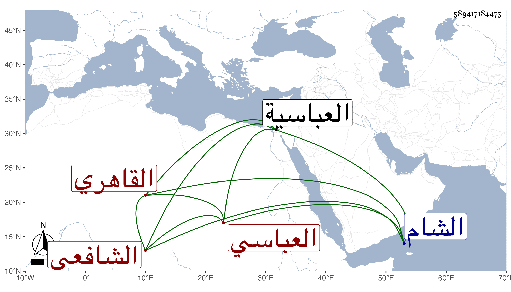

0902Sakhawi.DawLamic.ITO20230111-ara1.EIS1600.589417184475
Biography ID: 589417184475
500
عبد الرزاق بن محمد بن أحمد بن عبد الوهاب العماد العباسي ثم القاهري الشافعي موقع نائب الشام قجماس الاسحاقي وشقيق عبد الوهاب وأمين الدين محمد الآتيين وهو الأصغر ويعرف بعماد الدين . ولد في سنة تسع وثلاثين وثمانمائة بالعباسية وقدم مع أخيه فحفظ القرآن والارشاد لابن المقرىء وألفية الحديث والنحو وجمع الجوامع وغيرها ورافق أخاه في الأخذ عن البوتيجي وأبي الجود والأبدي والتقي الحصني والمناوي في آخرين ولكنه لم يكثر وكتب أيضا على الفرنوي ويكس ... وغيرهما ، وتنزل في بعض الجهات وحج غير مرة وأقرأ مماليك المشار إليه حين كان خازندارا كيس واستمر في خدمته إلى أن صار لما صار إليه وهو غير منفك عنه سفرا وحضرا وتزايدا اختصاصه به ، وأنشأ دارا حسنة بالقرب من بيت ابن معين الدين من رحبة العيد ، وأثرى بعد العدم وعرف بالعقل والتودد والفهم والمشاركة الحسنة بحيث رجح على أخيه بحسن تودده وعشرته ثم كان ممن ضيق عليه بعد موت استاذه وباع داره وغيرها وما نهض لارضائهم ومع ذلك فنفي إلى ألواح أو نحوها فدام مدة ثم شفع فيه وعاد فأقرأ عند ماميه مماليكه وانتظم أمره بعض انتظام .
